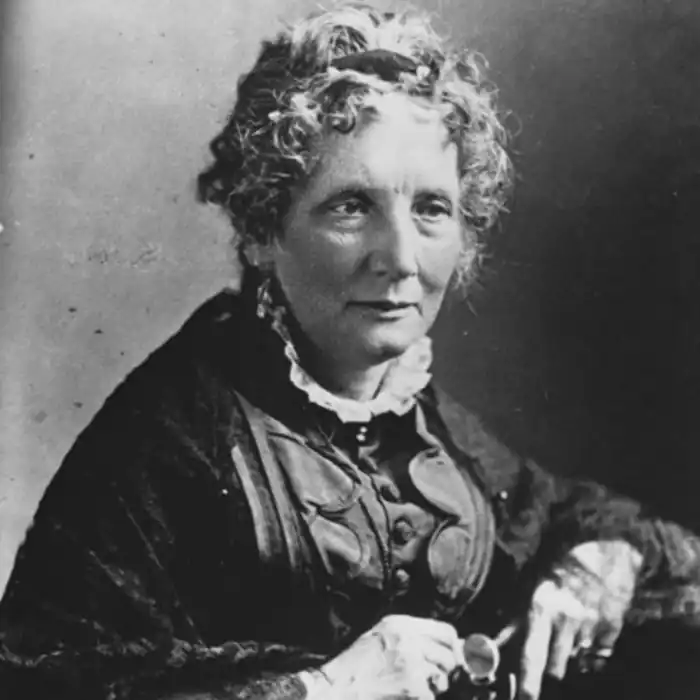
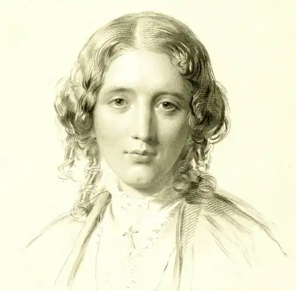
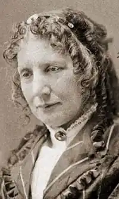
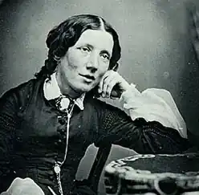

БІЧЕР-СТОУ, Гаррієт (Вееcher-Stowe, Harriet — 14.06. 1811, Лічфідц — 1.07.1896, Флорида) — американська письменниця."Скасуванню невільництва передувала знаменита книга жінки, пані Бічер-Стоу", — писав наприкінці XIX ст. Л. Толстой. Творчість Бічер-Стоу розвивалась у руслі аболіціоністського руху в США. Аболіціоністами називали прихильників скасування рабства і визволення негрів. До них належала й Бічер-Стоу. Негритянська тема — одна з найважливіших в американській літературі. Питання про знищення расизму хвилювало багатьох письменників, починаючи з кінця XIX ст. (публіцистика Г. Пейна, поезія Д. Лоуелла, Г. Лонгфелло, В. Вітмена, творчість Г. Торо та ін.). У середині XIX ст. рух проти рабства переріс у ряд значних повстань, учасниками яких були і білі, і чорні: повстання рабів у Віргинії (1831), громадянська війна в Канзасі, війна під керівництвом фермера Джона Брауна (1859). У розпал цих подій і з'явився роман Бічер-Стоу, який відобразив настрої ліберального крила аболіціонізму, прибічники якого виступали з моральною критикою рабовласників, апелювали до їхньої совісті та почуття обов'язку, об'єднуючи пафос боротьби за свободу з глибоко релігійними переконаннями.
Бічер-Стоу народилася в сім'ї священика Лаймена Бічера, виховувалася у дусі суворих релігійних традицій та християнської моралі. Погляди її рідних — батька, старших братів і сестер — переконаних противників рабства привели її в ряди аболіціоністів. Замолоду Бічер-Стоу викладала в жіночій школі. На початку 30-х р. XIX ст. сім'я Бічерів переселилася зі штату Коннектикут у штат Огайо, який межував з рабовласницьким Півднем. Тут майбутня письменниця вже на власному досвіді переконалась у нелюдяності рабства. Погляди Бічер-Стоу поділяв і її чоловік — професор богослов'я Калвін Стоу.
На початку 30-х років Бічер-Стоу розпочала літературну діяльність. її ранні оповідання та нариси публікувалися у популярному "Дамському журналі". Виступала вона і як автор творів для дітей, зверталася до жанру моралістичної притчі. Твори письменниці 30-х — поч. 40-х pp. склали збірку "Мейфлауер" ("The Mayflower", 1843). Найцінніше в них — поетичні описи повсякденного, звичайного уміння бачити цікаве в малому, в найбуденнішому. Своє завдання письменниця вбачала в тому, щоб правдиво відображати побут і звичаї простих людей. її не приваблювала екзотика, не зачаровувала фантастика: саме життя з його кровоточивою раною — рабством продиктувало тему її головної книги. Працю над нею стимулювала й та обставина, що у 1850 р. з'явився закон про рабів-утікачів, який схвилював багатьох американців. Бічер-Стоу вирішила написати книгу про жахіття рабства. До того ж, саме в цей час письменниця отримала замовлення на роман від аболіціоністського журналу "Національна ера". Праця над "Хатиною дядька Тома "була розпочата в 1851 р. і тривала всього декілька місяців. Спочатку роман публікувався окремими розділами в журналі, а в 1852 р. вийшов окремою книгою. Успіх перевершив усі сподівання. Сучасники сприйняли його не лише як заклик до захисту негрів, а й як протест проти зневаження людських прав людей з будь-яким кольором шкіри, котрі проживають на різних континентах. "Хатина дядька Тома" ("Uncle Tom's Cabin") — один з найперших в американській літературі соціальних романів реалістичного спрямування. У ньому правдиво та майстерно відображено життя негрів-рабів, драматизм доль невільників. Факти реальної дійсності обумовили силу емоційного впливу книжки на читачів. Увага американців була прикута до корінної проблеми часу: боротьба за визволення чорних рабів ставала найважливішою національною проблемою. "Ви не знайдете в рабстві, навіть там, де воно обходиться без жорстокості, жодної доброї, жодної хоч трохи привабливої риси", — писала Бічер-Стоу. Система рабства страшна не лише укоріненою в її основі несправедливістю, зневажанням людських прав, вона страшна своїм розбещуючим впливом на кожного, хто так чи інакше до цієї системи дотичний. Навіть "добрі" білі люди, отримуючи "право" володіти рабами і розпоряджатися їхніми долями, втягуються тим самим у справи і стосунки, аморальні за самою своєю суттю. Таким є погляд на проблему рабства автора "Хатини дядька Тома". Бічер-Стоу переконана: країна перебуває у моральному паралічі. Полювання на нефів-утікачів стає почесною професією і оголошується громадянською доблестю; найпотворніші і страшні за своєю жорстокістю вчинки щодо рабів уже не справляють враження на притуплену сприйнятливість навколишніх. Бічер-Стоу обурена тим, що білі християни, церква проповідують необхідність і виправдовують законність рабства. З обуренням заперечує вона проповіді священиків, які тлумачать Біблію в інтересах рабовласників. У романі Бічер-Стоу йдеться про трагічну долю нефа Тома, змальовано картини свавілля білих щодо чорних рабів, пережиті нефами страждання та приниження їхньої людської гідності. Руйнуються сім'ї, дітей забирають від батьків і продають, дружин розлучають з чоловіками. На нефів дивляться як на предмет купівлі та продажу, але ж вони, як показує це Бічер-Стоу, за своїми людськими якостями ні в чому не поступаються білим, а часто й перевершують своїх хазяїв. Мулат Гарріс — талановитий винахідник, його дружина Ліззі проявляє гідну подиву мужність, ведучи боротьбу за свою дитину; маленька Топсі зігріває навколишніх своєю чарівністю і гумором; велична у стражданнях і скорботі Кассі вражає силою волі та мужністю. Усі вони гідні кращої долі. Стверджуючи необхідність покінчити з рабством, Бічер-Стоу розвиває в романі свою концепцію свободи, що й зумовило ідейно-естетичну своєрідність роману та особливості висвітлення в ньому негритянської теми. Б.-С. переконана: свобода — необхідна умова людського буття; вона потрібна не лише нації в цілому, а й кожній людині зокрема. Свобода країни — це і є свобода її громадян. Окремо взята людина має право і повинна боротися за свою свободу, як і вся нація. Негр має таке саме право на свободу, як і білий. В уста Джорджа Гарріса Бічер-Стоу вкладає свої міркування про те, що становище негрів в Америці суперечить принципам Декларації незалежності і що американське законодавство не бере до уваги інтересів негрів: "На які закони ми можемо покладатися? Вони видавалися без нашої участі... Ці закони допомагають нашому пригнобленню, нашому безправ'ю, ось і все". Мрія про свободу і прагнення до неї втілені в образах Гарріса, Елізи та дядька Тома. Історія їхнього життя складає дві сюжетні лінії роману, які розкривають єдину і водночас суперечливу авторську концепцію свободи. Гарріс не змирився зі своїм рабським становищем, він бореться за свободу. Активна у своєму опорі несправедливості й Еліза. Інакше проявляє себе Том, покірно йдучи за волею хазяїна. Йому притаманні чесність, доброта і мудрість. Бічер-Стоу возвеличує його духовну шляхетність, релігійність і смиренність. Але в тихому і поштивому Томі криється велика сила духу. Його волю не можна зламати. І коли він потрапляє до жорстокого хазяїна Легрі, який змушує його бути наглядачем і бити непокірних негрів, Том рішуче відмовляється від цього, він не хоче чинити зла, не поступається своїми переконаннями, своєю людською гідністю. Його мовчазну відмову виконувати накази хазяїна Легрі розцінює як бунт. "Мою душу не купиш за жодні гроші! Ви над нею не вільні!" — говорить він хазяїну. Велич і шляхетність Тома проявляється в усіх його вчинках, у любові до людей, у самовідданості, коли рятуючи життя Єви, він ризикує собою. Мужня смерть Тома зображена в романі як його перемога і моральне визволення. Ідеал свободи поєднується в романі з ідеєю суспільних змін. Рух за визволення негрів-рабів, що розгортається в Америці, сприймається письменницею з надією і впевненістю у його щасливому закінченні.У 1853 р. Бічер-Стоу опублікувала книгу "Ключ до хатини дядька Тома" ("A Key to Uncle Tom's Cabin"), яка містить обширний документальний матеріал, що став джерелом для написання її роману. Поява книги пояснювалася необхідністю довести несправедливість тогочасних звинувачень письменниці в тім, що її роман є вигадкою. Питання про шляхи визволення негрів дискутується у книзі Бічер-Стоу "Дред, повість про Прокляте Болото" ("Dred: A Tale of the Great Dismal Swamp", 1856). Письменницю хвилює дилема: мирний чи кровопролитний шлях? У цьому романі йдеться і про соціальні наслідки рабства, про моральну деградацію населення південних штатів, про їхній економічний занепад, виявляються тенденції — призвідці громадянської війни, жорстокої розправи з аболіціоністами. Антирабовласницькі романи Бічер-Стоу вплинули на свідомість цілого покоління американців — учасників Громадянської війни на боці Півночі проти рабовласницького Півдня. Відомими стали слова А. Лінкольна, звернені до Бічер-Стоу: "Ви — маленька жінка, яка розпочала велику війну". Українською мовою "Хатину дядька Тома" Бічер-Стоу вперше видано у 1918 р. в скороченому перекладі М. Загірньої. Згодом його перекладали О. Діхтяр, В. Буряченко, В. Харитонов та В. Митрофанов. Н. Михальська